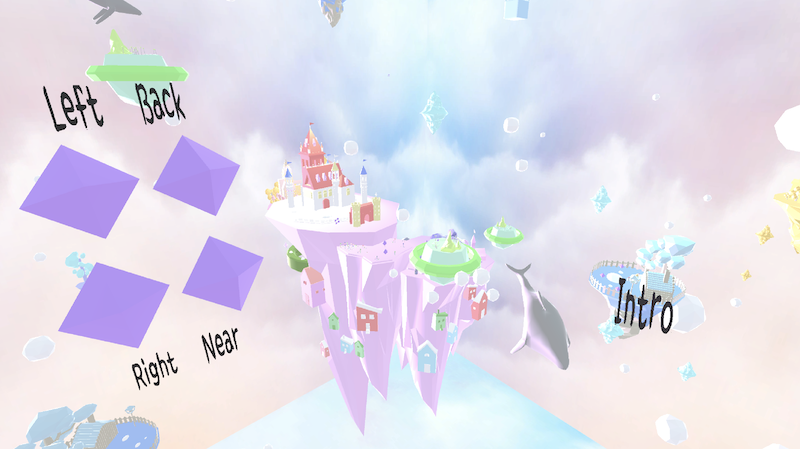

<!DOCTYPE html>
<html lang="ko">
<head>
    <meta charset="UTF-8">
    <meta name="viewport" content="width=device-width, initial-scale=1.0">
    <title>SJH Portfolio</title>
    <link rel="stylesheet" href="./style/reset.css">
    <link rel="stylesheet" href="./style/dream.css">
    <link href="https://fonts.googleapis.com/css2?family=Noto+Sans+KR:wght@100;300;400;500&display=swap" rel="stylesheet">
</head>


<body>

    <header>
        <a href="main.html" class="logo">
            XY&Z
        </a>
        <nav class="nav">
            <div class="nav_bar">
                <span class="nav_bar_1"></span>
                <span class="nav_bar_2"></span>
                <span class="nav_bar_3"></span>
            </div>
        </nav>
    </header>

    <section>
        <div class="title">Dream</div>
        
        <article class="project">
            

            <div class="sticky_wrap">
                <div class="sticky_Title">Dream</div>
                <div class="txtwrap"> 
                    <ul>
                        <li><span> Tools / </span><br /> Unity / 3DMax / C#</li>
                        <li><span> Date / </span><br /> 2017</li>
                    </ul>
                    <p class="explain">
                        동심의 세상을 만들어보고자 하는 취지의 프로젝트 입니다.<br />
                        그래픽이 화려한 요즘의 게임들과 반대되는 프로젝트를 만들고자 low poly 형식으로 만들었습니다.<br />
                        동심의 주를 이루는 큰 성이 있는 섬을 중간에 배치하고 주변에는 어렸을 때 상상 했었던 여러 세상들을<br />
                        주변 섬으로 배치하였습니다. 1인칭과 3인칭 모두 체험할 수 있게 만들어 사용자의 자율성을 높였습니다.
                    </p>
                </div>

                <div class="introImg subImg">
                    
                </div>

                <div class="firstImg subImg">
                    
                </div>

                <div class="thirdImg subImg">
                    
                </div>

             </div>


        </article>

    </section>


    <footer>
        <a href="#">Next</a>
    </footer>

    <script src="./script/dream.js"></script>
</body>


</html>